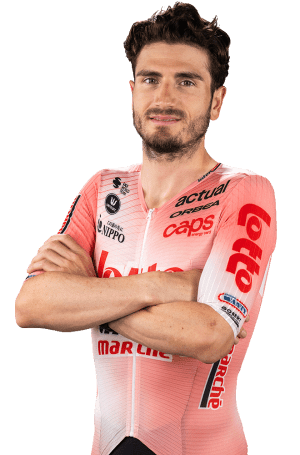

LaVuelta2026
Inicio
Ciclista
Equipo
Etapa
Meteorología
Clasificaciones
Juegos
Ayuda
Lorenzo Rota
Datos personales
Nombre completo: Lorenzo Rota
Fecha de nacimiento: 23 de mayo de 1995
País de nacimiento: Italia
Equipo: Lotto Intermarché
Dorsal: 205

Datos equipos
Lotto Intermarché
Intermarché - Wanty
Vini Zabù - KTM
Bardiani - CSF
Unieuro Wilier Trevigiani
MG Kvis - Wilier
Temporada 2025
Nombre del dato
Resultado
Competiciones disputadas
10
Victorias de etapa
0
Victorias de clasificación general
0
Podios conseguidos
0
Maillots especiales
0
Mejor resultado de la temporada
10º en el Figueira Champions Classic